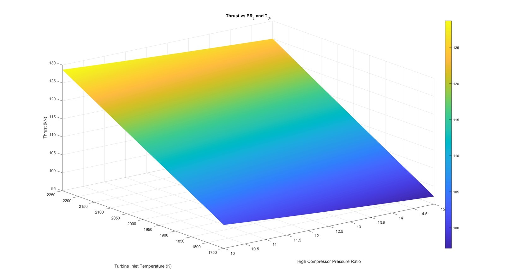
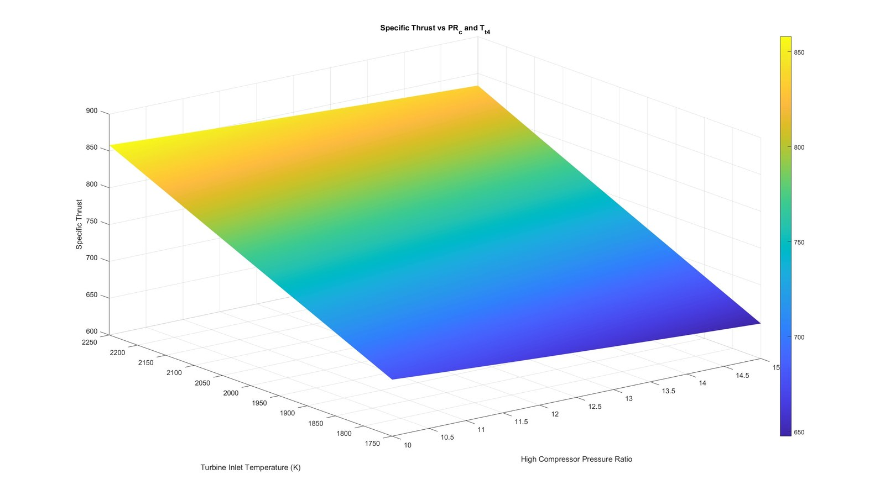
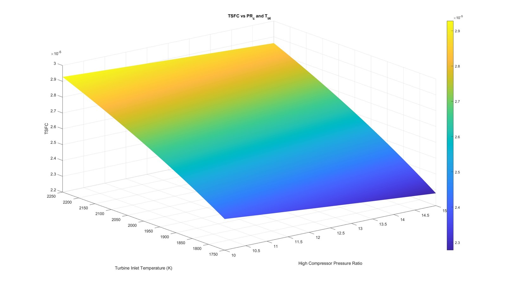
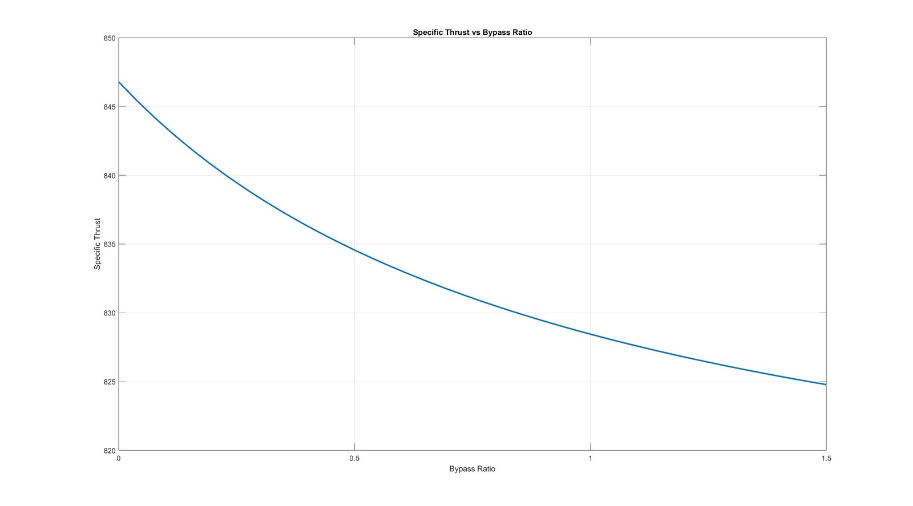
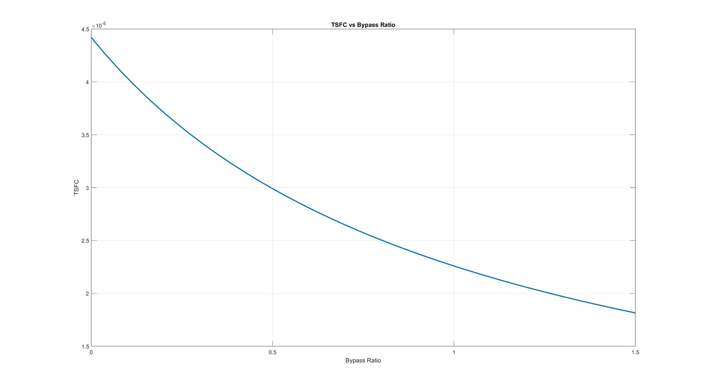

Aircraft Propulsion · University of British Columbia Okanagan
This project modeled the thermodynamic cycle of the F135 — the low bypass turbofan engine powering the F-35 Lightning II — to systematically optimize its performance parameters. The analysis examined how high compressor pressure ratio and turbine inlet temperature affect thrust, specific thrust, and thrust specific fuel consumption (TSFC), and how bypass ratio trades specific thrust against fuel efficiency.
The work combined classical Brayton cycle analysis with iterative MATLAB computation, producing a parametric study of engine performance across a realistic design space.
The 3D surfaces show turbine inlet temperature as the dominant driver of performance: raising it from 1750 K to 2250 K lifts thrust from roughly 97 kN to 128 kN, but TSFC rises with it, so extra thrust comes at a fuel cost. The bypass ratio sweep showed the opposite trade-off — increasing bypass ratio from 0 to 1.5 cut TSFC by more than half while specific thrust fell only slightly. The analysis confirmed that the F135's relatively low bypass ratio is a deliberate trade-off favouring thrust density and supersonic performance over cruise fuel efficiency, consistent with its combat aircraft mission profile.
The iterative approach allowed rapid evaluation of hundreds of design points that would be infeasible to assess analytically, demonstrating the value of computational methods in early-stage propulsion design.




